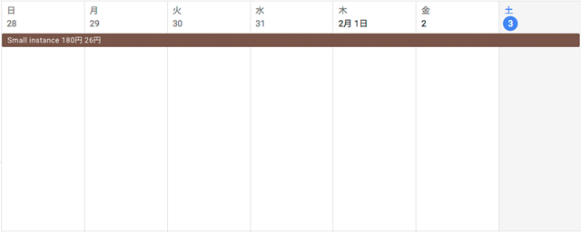
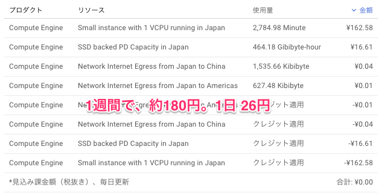
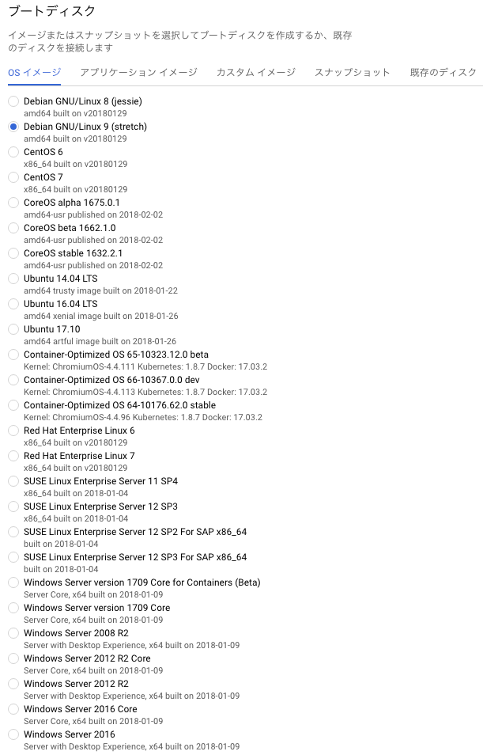

さぁ、週末になりました。みなさんお仕事お疲れ様です。JunkHack の近況は一言で言えば「現場は最後の火事場に突入、阿鼻叫喚」といったところです。２時帰りでした。エンジニアは直感的に、この仕事は無理すれば間に合うか、間に合わないか肌感覚で判別していますが、この仕事は明らかに厳しそうです。立派だなと思うのは、上位の中間管理者のパワハラがあまりないことです。プロジェクトは破綻しているが、人間の品質は高い言えるでしょう。構造的な欠陥は、各プロジェクトチーム間を専任で連携する担当部署（者）がないことと、指揮命令系統の責任範囲がしっかり明確化されていないことです。
また、納品間際で客先要望で設計変更があること、また設計上の重大な欠陥が見つかり設計変更があること、そして重要なそれらを担当できる人間のタスクが許容を大幅に超えているという現実です。今後、これらの問題をどのようにカバーしていくかがこの仕事の１つの楽しみでもあります。ちなみに自分の位置は、末端作業者であり、途中からの設計引継ぎという感じで一部設計者です。
■記事の要約
さて、今回の話の要約は以下のようになります。
・グーグルクラウドの仮想マシンで１週間動かしてみた値段は、約180円で１日約26円
・WordPress を動かすため、OS,WEB,DB,PHP を動作させるためアプリは何がよいか？
・１台シングル構成でいくか、クラスタ構成でいくか？
・WEB は apache じゃなく nginx を採用する？
・DB は、mariadb を採用する？
・PHP は ver7 にするか、HHVM を採用するか検討
■グーグルクラウドの仮想マシンで１週間動かしてみた
１週間ほど、グーグルクラウド（Google Cloud Platform のこと）の東京ゾーンで、g1-small（vCPU x 1、メモリ 1.7 GB）10GB SSD を動かし続けてみました。基礎的な値段を知るためです。
28日は、リソースをごにょごにょと切り替えてベンチマークしていたので、値段はおおよそです。

コンパネからの値段は以上の表示でした。予想より低い値段ですね。１ヶ月４週として、720円、１０００円未満です。まぁ、ネットワーク負荷はまったくないですし、CPU もまったく使っていませんので１つの目安です。ちなみに、このインスタンスのベンチマークは前回計測しましたが、683 程度の Index Score です。ラズパイ3相当です。SSD ですがディスクへの I/O にもリソース制限があり、
この IOPS がどのような条件かは不明ですが、300程度に絞られている感じです。まぁ、無料枠は、３．２万ほどありますからこのインスタンスを動かし続けても無料枠で１年はいけそうです。もし遅いなと思ったら、CPU コア数を増やすか、メモリを増やすかして調整してみることにします。
■WordPress を動かすアプリは何がよいか？
OSや、その上に乗っけるWEB のアプリケーションは何がよいか改めて検討してみることにします。
現在、仮で動かしているOS は CentOS7 ですが、グーグルクラウドのブートディスクで用意されているものは以下のようになります。

Debian GNU/Linux 9 (stretch)が初期値ですが、RHEL6や RHEL7 も選べます。たぶん、インスタンスの値段があがると思いますが。また、Win系のOS も選べます。JunkHack 的には、お仕事でもなじみがある RHEL互換の CentOS を選ぶのがベストかなと思いますが、Debian系の OS を選べば、たとえばフェイスブックが開発している HHVM という PHP のようなエンジンがお手軽に使えるというメリットもあります。また、RHEL を選択し、開発アカウント上で挙動の確認をする（実運用はしない）という目的も達成できそうです。１からDVDブートなり USBブートなりして、OS を入れる方法があるかどうかはまだ不明です。
また、このイメージは、Cloud Launcher というポータルサイトから選ぶことも可能です。
GCP Cloud Launchar 仮想マシン
https://console.cloud.google.com/launcher/browse?filter=solution-type:vm
ここには、必要なアプリケーションの上にWordPress をプリインストールしてあるイメージもあります。お手軽に試してみるにはいいかもですが、他人が作ったものなので細部がわからないため、これはとりあえずパスです。
あと、手元の環境で作成したイメージを使って移行することも可能なはずで、この方法は次回以降検討したいと思います。大雑把な流れとしては、手元のバーチャルボックスで作成した各種OS環境をグーグル上で動作させる手順がわかればいろいろと応用が可能です。
■オンラインで追加DISKをつけてみた
あと、DISKの追加をオンライン（電源を切らずに）で出来るか確認しておきました。結果、オンラインで追加でき、IOPS は以下のようになりました。
・実行コマンド
wget http://www.winkey.jp/downloads/visit.php/fio-crystaldiskmark -O crystaldiskmark.fio
sed -i ‘s/tmp/home\/tmp/’ crystaldiskmark.fio
^^^^^^^^テストしたいデバイスのあるパス
fio crystaldiskmark.fio | tee log
grep iops -B1 log
結果
・sda（10GB SSD bootDISK） xfs
Seq-Read: (groupid=0, jobs=1): err= 0: pid=22249: Sat Feb 3 16:45:49 2018
read : io=1024.0MB, bw=249246KB/s, iops=243, runt= 4207msec
—
Seq-Write: (groupid=1, jobs=1): err= 0: pid=22250: Sat Feb 3 16:45:49 2018
write: io=1024.0MB, bw=104036KB/s, iops=101, runt= 10079msec
—
Rand-Read-512K: (groupid=2, jobs=1): err= 0: pid=22251: Sat Feb 3 16:45:49 2018
read : io=1024.0MB, bw=37647KB/s, iops=73, runt= 27853msec
—
Rand-Write-512K: (groupid=3, jobs=1): err= 0: pid=22260: Sat Feb 3 16:45:49 2018
write: io=1024.0MB, bw=104191KB/s, iops=203, runt= 10064msec
—
Rand-Read-4K: (groupid=4, jobs=1): err= 0: pid=22261: Sat Feb 3 16:45:49 2018
read : io=458240KB, bw=7637.3KB/s, iops=1909, runt= 60001msec
—
Rand-Write-4K: (groupid=5, jobs=1): err= 0: pid=22270: Sat Feb 3 16:45:49 2018
write: io=532956KB, bw=8882.5KB/s, iops=2220, runt= 60001msec
—
Rand-Read-4K-QD32: (groupid=6, jobs=1): err= 0: pid=22271: Sat Feb 3 16:45:49 2018
read : io=391988KB, bw=6530.9KB/s, iops=1632, runt= 60021msec
—
Rand-Write-4K-QD32: (groupid=7, jobs=1): err= 0: pid=22280: Sat Feb 3 16:45:49 2018
write: io=361704KB, bw=6026.2KB/s, iops=1506, runt= 60022msec
・sdb (30GB SSD 追加DISK) ext4
Seq-Read: (groupid=0, jobs=1): err= 0: pid=22576: Sat Feb 3 17:15:26 2018
read : io=1024.0MB, bw=250496KB/s, iops=244, runt= 4186msec
—
Seq-Write: (groupid=1, jobs=1): err= 0: pid=22577: Sat Feb 3 17:15:26 2018
write: io=1024.0MB, bw=37378KB/s, iops=36, runt= 28053msec
—
Rand-Read-512K: (groupid=2, jobs=1): err= 0: pid=22580: Sat Feb 3 17:15:26 2018
read : io=1024.0MB, bw=104900KB/s, iops=204, runt= 9996msec
—
Rand-Write-512K: (groupid=3, jobs=1): err= 0: pid=22581: Sat Feb 3 17:15:26 2018
write: io=1024.0MB, bw=32532KB/s, iops=63, runt= 32232msec
—
Rand-Read-4K: (groupid=4, jobs=1): err= 0: pid=22589: Sat Feb 3 17:15:26 2018
read : io=407976KB, bw=6799.5KB/s, iops=1699, runt= 60001msec
—
Rand-Write-4K: (groupid=5, jobs=1): err= 0: pid=22598: Sat Feb 3 17:15:26 2018
write: io=226936KB, bw=3782.3KB/s, iops=945, runt= 60001msec
—
Rand-Read-4K-QD32: (groupid=6, jobs=1): err= 0: pid=22600: Sat Feb 3 17:15:26 2018
read : io=660252KB, bw=11000KB/s, iops=2750, runt= 60022msec
—
Rand-Write-4K-QD32: (groupid=7, jobs=1): err= 0: pid=22613: Sat Feb 3 17:15:26 2018
write: io=361552KB, bw=6023.7KB/s, iops=1505, runt= 60022msec
追加DISKの書き込みが遅いのは気になりますが、まぁ、もともと絞りこんであって遅いのでまぁどうでもいいです。まぁ、話はだいぶそれましたが、OSは、このまま centos7(kernel 3.10.0-693.17.1.el7.x86_64) で動かすことにします。
■PHP7 の変わりに HHVM を採用
次に検討するのは、WEB,DB,PHPを何にするかです。一応、centos 標準だと以下のようになります。
apache(httpd) 2.4.6 + mod_ssl
php 5.4.16
mariadb 5.5.56
今のリポジトリは以下のようになっています。
# yum repolist
::
repo id repo name
base/7/x86_64 CentOS-7 – Base
epel/x86_64 Extra Packages for Enterprise Linux 7 – x86_64
extras/7/x86_64 CentOS-7 – Extras
google-cloud-compute Google Cloud Compute
google-cloud-sdk Google Cloud SDK
updates/7/x86_64 CentOS-7 – Updates
一応、構想としては、WEB は apache じゃなく、nginx にして、DB は、MariaDB Galera Cluster で、PHP 相当は、HHVMにしようかという思いがあります。ずいぶん前ですが、ローカル環境に２台の構成で、LB経由で負荷テストをしましたが HHVM の速度が驚くほど速く感動した覚えがあります。今は、PHP7 がリリースされて速度は速くなったと聞きます。
以下にいい比較記事がありました。
HHVM vs PHP 7 – The Competition Gets Closer!
https://kinsta.com/blog/hhvm-vs-php-7/
グラフを見ると、PHP7 もほとんど同じ速度ですが、CPU は HHVM のほうが節約できそうです。HHVM で行こうかなと思います。DBは、mariadb 5.5 でもいいんですが、２台構成の wordpress クラスタに実験的に運用してみようと思っていますのでお手軽に同期ができるDBとして使おうと思います。
■まとめ
以下のような構想です。
・WEB nginx
・DB MariaDB Galera Cluster
・HHVM
・Gluster File System（glusterfs-server）wp-content/uploads の共有
LBは使わず、とりあえずはDNSラウンドロビンにて２台の WordPress サーバでそれぞれ振り分けるという感じです。可用性という観点は、まず置いておいて、その一歩手前までやってみようと思います。
この構成で興味があるのは、MariaDB の Cluster は本当に、１台で更新すれば２台目に同期されるのか？や、GlusterFS は実運用上、問題点はないかなどです。更新者は一人なので、同時書き込みの心配はほぼ無用なので、多少のラグがあっても問題はないのですが、実際に構成してみて、動作を確かめてみたいです。
たかが、WordPress を動かすだけに os から選定し、アプリを選定したりするのは恐ろしく一般的ではないとは思いますが、こういうマニア向けの記事もどこかで需要があるかもしれません。